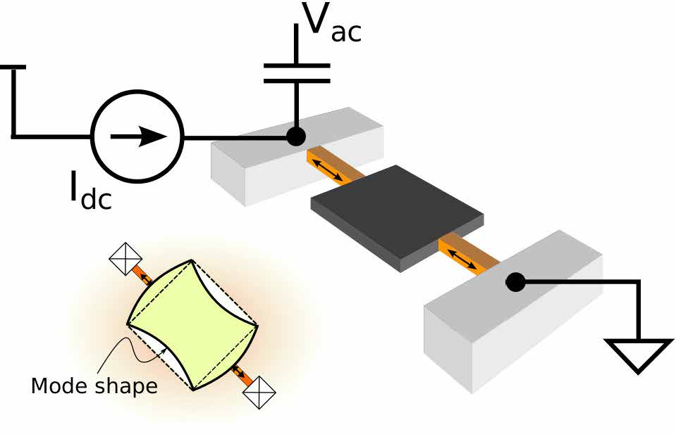

News
[31-May-2020] I gave an invited talk at the ICRA 2020 workshop "Beyond Soft Robotics: Pioneer Perspectives and Interdisciplinary Collaboration"
[03-Dec-2019] I received an AHA postdoctoral fellowship 2020-2021
Papers
 |
Transient Support from Fibroblasts is Sufficient to Drive Functional Vascularization in Engineered Tissues H.-H. G. Song, A. Lammers, S. Sundaram, L. Rubio, A. X. Chen, L. Li, J. Eyckmans, S. N. Bhatia and C. Chen Advanced Functional Materials, 2003777, 2020.  PDF [SI] PDF [SI]
| |
 |
Topology Optimization and 3D Printing of Multimaterial Magnetic Actuators and Displays
S. Sundaram, M. Skouras, D. S. Kim, L. van den Heuvel and W. Matusik Science Advances, vol. 5, no. 7, eaaw1160, 2019. PDF [SI]
Featured as the MIT Frontpage. Read the MIT News press release. | |
 |
Learning the Signatures of the Human Grasp using a Scalable Tactile Glove S. Sundaram, P. Kellnhofer, Y. Li, J.-Y. Zhu, A. Torralba and W. Matusik Nature, vol. 569, no. 7758, 2019. Paper Link [Free to read]
Project page with designs, datasets and results. Commentary in Nature by Giulia Pasquale (PDF); in Nature Electronics by Christiana Varnava (PDF); in Science Translational Medicine by Li-Hsin Han (Link); Behind the paper - Nature Communities (Link) Covered by [MIT News, Homepage] [The Economist] [PBS NOVA] [BBC Radio] [NewScientist] and others. | |
| Photothermocapillary Oscillators A. W. Hauser*, S. Sundaram* and R. C. Hayward (*equal contribution) Physical Review Letters, vol. 121, 158001, 2018. PDF [SI]
| ||
| "> | 3D-Printed Self-Folding Electronics S. Sundaram, D. S. Kim, M. A. Baldo, R. C. Hayward and W. Matusik ACS Applied Materials and Interfaces, 2017. PDF (ACS Editors' choice)
Featured as the MIT Frontpage. Covered by MIT News, C&EN (PDF) and others. | |
 |
3D-Printed Autonomous Sensory Composites S. Sundaram, Z. Jiang, P. Sitthi-Amorn, D. S. Kim, M. A. Baldo and W. Matusik Advanced Materials Technologies, vol. 2, no. 3, 2017. PDF
(Cover Article) Featured as the MIT Frontpage. Covered by MIT News, TechCrunch, Forbes and others. IEEE Signal Processsing Magazine report describes our work in the context of robotics. | |
| "> | Bulkmode Piezoresistive Thermal Oscillators: Timeconstants and Scaling S. Sundaram and D. Weinstein IEEE Trans. on Ultrasonics, Ferroelectrics and Frequency Control, vol. 62 , no. 8, 2015. PDF
| |
 |
Self-Assembled Electrical Biodetector Based on Reduced Graphene Oxide T. Kurkina, S. Sundaram, R. S. Sundaram, F. Re, M. Masserini, K. Kern and K. Balasubramanian ACS Nano vol. 6, no. 6, 2012. PDF
| |
 |
Vibration and Shock Reliability of MEMS: Modeling and Experimental Validation S. Sundaram, M. Tormen, B. Timotijevic, R. Lockhart, T. Overstolz, R. P. Stanley and H. Shea Journal of Micromechanics and Microengineering vol. 21, no. 4, 045022, 2011. PDF
| |
| " | ESD Testing and Combdrive Snap-in in a MEMS Tunable Grating under Shock and Vibration S. Sundaram, M. Tormen, B. Timotijevic, R. Lockhart, R. P. Stanley and H. Shea Proc. SPIE Photonics West 2011, 79280A, San Francisco, Jan 2011. PDF
| |

| Modeling Interface Diffusion as a Mechanism for Threshold Voltage Drift in pH Sensors S. Sundaram and N. N. Sharma Proc. IEEE Sensors 2010, Hawaii, Nov 2010. PDF
| |
| " | Improved V-Shaped Microcantilever Width Profile for Sensing Applications Subramanian S. and N. Gupta Journal of Physics D: Applied Physics, vol. 42, no. 18, art. no. 185501, 2009. PDF
| |
| " | A Memory Efficient Algorithm for Real Time Object Counting Subramanian S. and Bhadrinarayana L. V. Proc. IEEE International Advance Computing Conference IEEE IACC 2009, Patiala, Mar 2009. PDF
| |
| " | Design and Analysis of Helical Flagella Propelled Nanorobots Subramanian S., J. S. Rathore and N. N. Sharma Proc. 4th IEEE International Conference on Nano/Micro Engineered and Molecular Systems IEEE NEMS 2009, Shenzhen, Jan 2009. PDF
|
{kind=link}
{kind=link}
{kind=link}
Thesis
[PhD Thesis] Subramanian Sundaram, 3D-printing Form and Function, PhD Thesis, Massachusetts Institute of Technology, 2018.PDF
[SM Thesis] Subramanian Sundaram, Thermally-Actuated Piezoresistively-Sensed Mechanical Silicon Oscillator, SM Thesis, Massachusetts Institute of Technology, 2014.PDF
Reports
[20.405] Subramanian Sundaram, Tunable coupling in synthetic oscillators for pattern recognition, 20.405 Project report, Massachusetts Institute of Technology, 2016.PDF